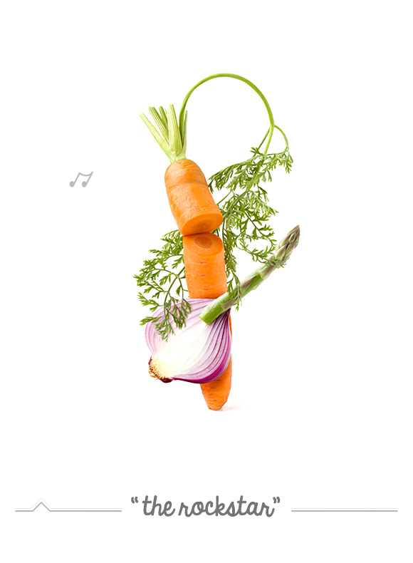
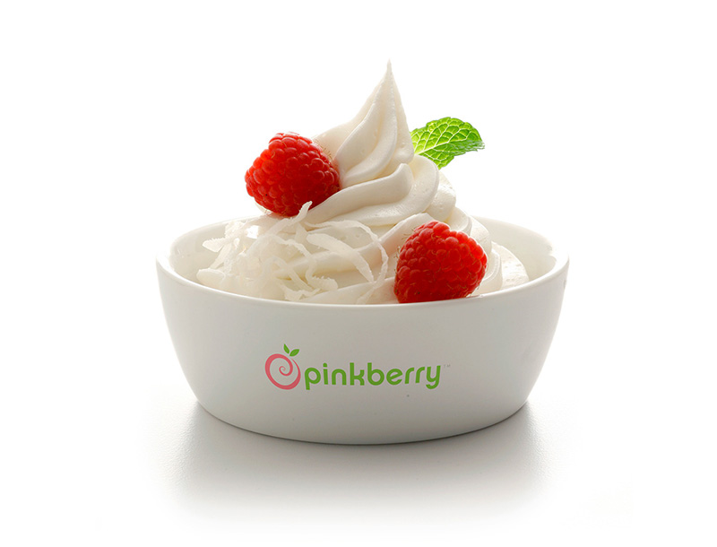
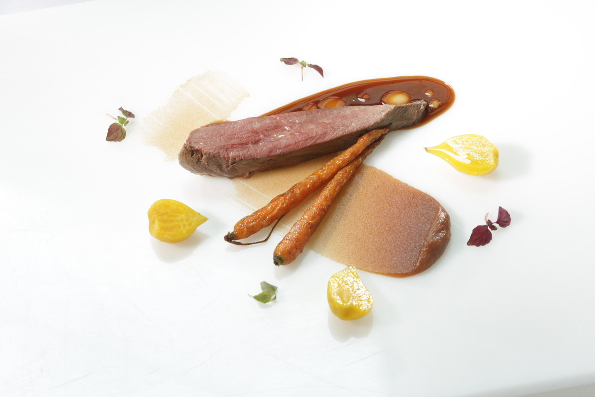

图册
about uemo
以规范的管理为基础，以完善的服务体系为依托，以产业化模式经营降低成本为优势，为客户提供专业化、人性化、个性化的设计和服务，努力提升和超越客户的消费价值。
1366
英式菜肴
4688
法式菜肴
2088
美式菜肴
1866
德式菜肴

土豆又叫马铃薯或洋芋
是一种是茄科茄属植物。我们是世界上最大的生产国，它所含的蛋白质和维生素C、维生素B

吃西餐时要衣着整洁，坐姿端正，背挺直，脖子伸长。最重要的是手一定要保持干净， 一餐内容齐全的西菜一般有七八道

膳食的营养配比
很合理，其中维生素C的含量约是等量的西瓜、葡萄或苹果的10倍，此外草莓中富含铁、果糖、葡萄糖、

全世界的人，不管是黑人还是白人，甚至黄种人，生下来的胃是一样的，当然胃口也基本上相同。

将芥兰洗净，用热水悼一下，取出后用清水冷却，空干水份待用。 将悼好的芥兰切成长段，或整核码放在盘内，

在西餐中最具有代表性的食物，那就非牛排莫属了。牛肉在古时候比较珍贵，这里我们就来学习牛排的制作方法自己制作牛排。